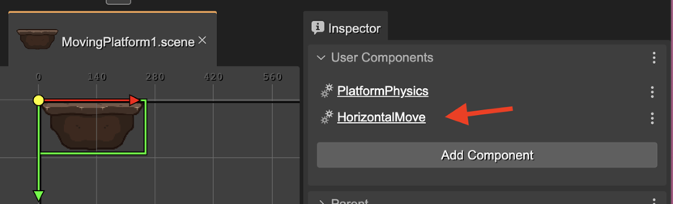
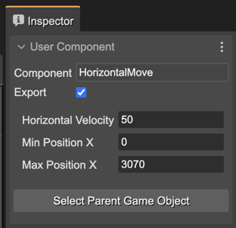
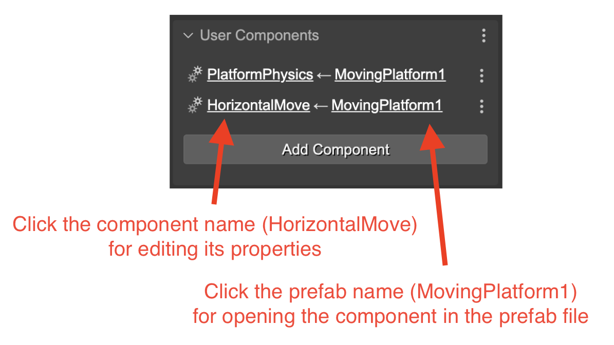
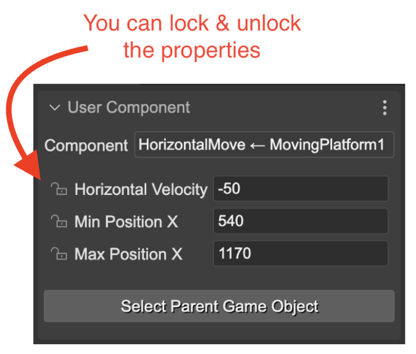
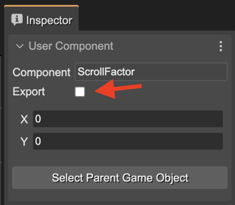
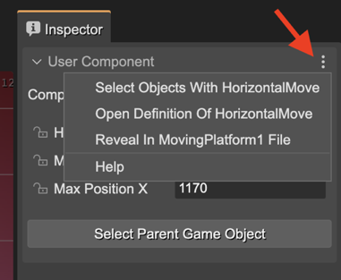

Adding User Components to a Prefab
In the previous section we shown how you can add a user component to an object. But, what does happen if you add a user component to a prefab? It is practically the same, but this component will be present in all the prefab instances too.
Let’s see this example of a moving platform prefab. It contains the PlatformPhysics and HorizontalMove components, but let’s focus on the HorizontalMove one:
 When you select an instance of this MovingPlatform1 prefab, it also shows the HorizontalMove component, but highlighting that it belongs to the MovingPlatform1 prefab:
The component’s link contains the component’s name and the name of the prefab it belongs to. If you click the prefab name, it opens the prefab file in a new editor, and selects the component. If you click on the component link, it selects the component and shows its properties in the Inspector view. Look you can lock/unlock the properties:
Generating the code for a component in a prefab instance
The user components compiler will generate the code to changing the component’s properties like this:
// movingPlatform2 (components)
const movingPlatform2HorizontalMove = HorizontalMove
.getComponent(movingPlatform2);
movingPlatform2HorizontalMove.horizVelocity = -50;
movingPlatform2HorizontalMove.minX = 540;
movingPlatform2HorizontalMove.maxX = 1170;
Note it doesn’t create the component, else it gets the component from the movingPlatform2 prefab instance.
Hiding a component to the prefab instances
Maybe you don’t want to show the component of a prefab in the prefab instances. Because it is a component with local properties and behaviors and it could be perfectly hidden to the prefab instances. For doing this, you can uncheck the Export parameter of the component in the prefab:
Actions for a component in a prefab instance
These are the actions associated to the user component of a prefab instance:
Select Objects With HorizontalMove: selects in the scene all objects containing the HorizontalMove component.
Open Definition Of HorizontalMove: opens the definition of the component in the User Components Editor.
Reveal in MovingPlatform1 File: opens the prefab in a new Scene Editor and selects the HorizontalMove component.